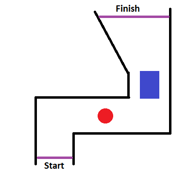
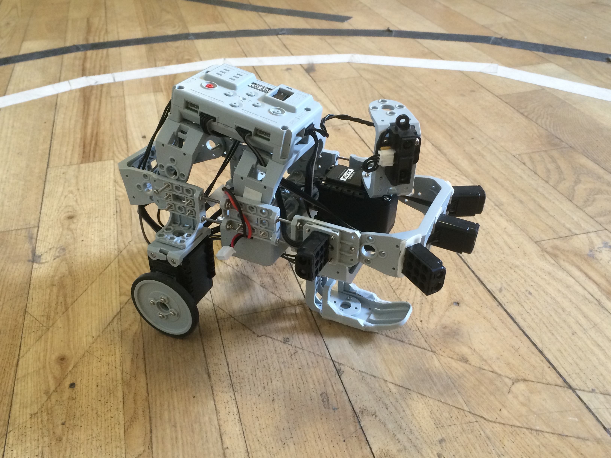
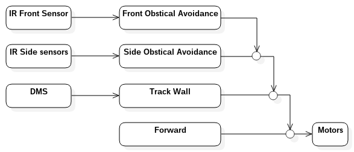
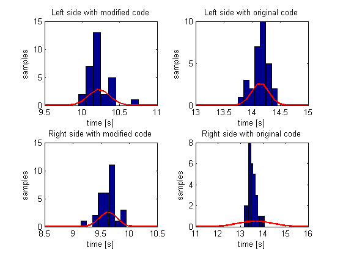

Responsible: Morten Nylin (s103034)
Group: Cm3
Course: Modular Robotics (31384) in June 2015
Abstract
For this task we managed to create a back wheel differential driven robot, that where able to complete the course autonomously.
By using a subsumptive control architecture the system is capable of handling all obstacles be it a corner, a blocked path or another robot.
In the actual competition we did not manage to complete a single lap, and the robot presented below is a later modified version.
The video below shows the robot running on both left and right side, along with a recap of the tests.
Introduction
For this task the teams had to create a robot that would be able to complete a small track. Besides having twists and turns the track also contained a ball and a box (marked with red and blue) placed at a not precisely specified position.
In the competition two robots competed side by side for who would finish first and the ability to complete the track. Because of bad structural design the robot presented on this page is not the same as the one driven in the competition.

Figure 1: The Track
Structure
The robot as seen in figure 1 is back wheel differential driven one with a single "ski" mounted below it for better sliding ability.
Unfortunately this robot is not the one driven on the competition day, which had two castor wheels in the front instead of the ski.
The reason for the change, was that the entire construction including the castor wheels loosened during testing, that on the competition day bending in the framework would cause the back wheels to be lifted of the ground.
In all the robot had 6 sensors, 5 short range IR distance sensors and one long range IR distance sensor mounted to a servo in order to dynamically decide whether to follow the right or left wall of the track.

Figure 2: Autonomous wheeled robot for task 1
Design
The design of the autonomous decision making system is based on a subsumptive architecture. First priority is the "front obstacle avoidance", which makes sure that the robot brakes if its road is blocked and turns it in order to drive around it.
The decision is based on the short distance IR sensors on the front of the robot. Second priority is the "side obstacle avoidance", which ensures that the robot can drive through narrow gaps, like between the box and the wall.
It will only trigger if the short range distance sensors on the side of the robot measures something. Third priority is the "track wall", which keeps the robot at an appropriate distance from the wall, using the long distance IR sensor.
Last and most basic priority is the "forward", this commands the robot to drive in a straight line at full speed.

Figure 3: Subsumptive control
Results
As previously mentioned the first version of the robot did not manage to get any points in the competition and it was therefore modified. This modified version was then tested on the track and complete 30 runs from each stating position, with an average time of 14.15 on the left side
and 13.66 on the right side, with standard deviations of 0.15 and 0.77. The reason for the high std. dev. on the right side is that one run out of 30 took 3 seconds longer than average.
After the first successful tests the code was optimized by letting the robot turn faster in corners and drive faster in straight lines. Again 30 test runs where carried out on each side, and the result was that the average time
for completing the left side was cut 10.22 seconds with a std. dev. of 0.13, and 9.63 seconds for the right with a std. dev. of 0.15.
Comparing the data sets before and after code optimization using a standard t-test revealed with more than 95% confidence, that the two different versions is not part of the same distribution and the new code therefore is fastest.

Figure 4: Test results
References
[1] R. Pfeifer and C. Scheier, Understanding Intelligence. MIT Press, 1999
[2] R. Pfeifer and C. Scheier, Understanding Intelligence. MIT Press, 1999
[3] R. Pfeifer and C. Scheier, Understanding Intelligence. MIT Press, 1999
[4] R. Pfeifer and C. Scheier, Understanding Intelligence. MIT Press, 1999